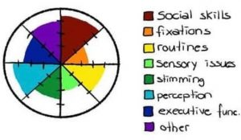

Autismo é uma condição neurológica, um cérebro que processa o mundo diferente das pessoas não autistas. É um espectro com combinações infinitas, cada
indivíduo tem suas próprias vivências e dificuldades.
Muitas pessoas pensam no autismo como uma linha que vai de "menos autista" até "mais autista"
Quando na verdade o autismo se parece mais com uma roda de cores, em que cada um vai ter suas próprias dificuldades e qualidades, pois cada autista é diferente entre sí.
O autismo é tradicionalmente classificado em três níveis: um, dois e três, que são conhecidos como leve, moderado e severo. A medicina os classifica
de acordo com o nível de "Comprometimento", quanto mais "afetado" pelo "transtorno", mais "grave" é o nível do autismo. Sendo que essa classificação é
incorreta e extremamente ofensiva. Um autista moderado não é "menos autista" do que um autista severo ou "mais autista" do que um autista leve. Todos
são autistas por igual, cada um com suas peculiaridades.
Então, as pessoas autistas adotaram um sistema de classificação que leva em conta o nível de suporte de cada indivíduo. Sendo nível 1 quem precisa de menos
suporte e nível 3 quem precisa de mais suporte.